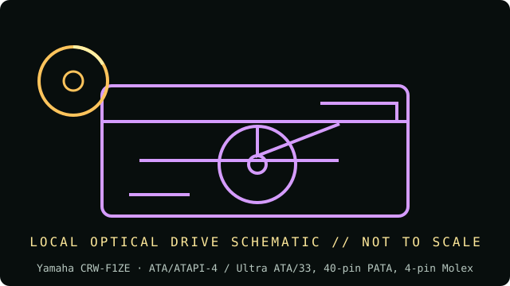

[ INDIVIDUAL COMPONENT // OPTICAL DRIVES ]
Yamaha CRW-F1ZE
Internal E-IDE/ATAPI CD-R/RW recorder variant. The ZE suffix identifies the IDE version, not the SCSI or external F1 variants. Specifications below are tied to the exact model identifiers and cited documentation; nearby product families may differ.

IDENTIFICATION: Yamaha CRW-F1ZE · confirm full model/revision marking and compare it with the cited source before assigning a host or media capability.
Verified specifications
| Catalog subcategory | CD-R and CD-RW drives |
|---|---|
| Exact product identifier | Yamaha CRW-F1ZE |
| Era / product type | Internal 44× CD recorder, CRW-F1 family |
| Read/write and media | CD-R write up to 44×, CD-RW rewrite up to 24×, CD read up to 44×; Audio Master Quality Recording and DiscT@2 are feature/mode-specific. |
| Interface and mechanics | ATA/ATAPI-4 / Ultra ATA/33, 40-pin PATA, 4-pin Molex; half-height 5.25-inch tray drive, 146.1 × 41.3 × 192.4 mm. |
| Variant and host cautions | Use the CRW-F1ZE IDE documentation, not CRW-F1ZS/ZSX SCSI instructions. Recording speed depends on certified media and authoring mode; Audio Master Quality mode uses a reduced recording capacity. Confirm jumper, power, and legacy ATAPI support. |
Optical-media preservation notes
Use archival-grade media only where needed and do not infer longevity from Audio Master or DiscT@2 features. Preserve the original recording-session details, disc manufacturer/type, speed, drive firmware, and a verified readback image.
- Handle discs by the edge or center hub; do not write on the data side or add adhesive labels over the recording surface.
- Store in a clean, cool, dry, dark environment in protective cases. Keep original media unmodified and make verified working images for access.
- Retain checksums, drive model/firmware, software, read errors, media type, and acquisition/handling history with each preservation image.
Identification and host checks
- Confirm the complete manufacturer label, model suffix, revision, serial/date code, and supplied bezel, cable, adapter, or bracket before installation.
- Use the CRW-F1ZE IDE documentation, not CRW-F1ZS/ZSX SCSI instructions. Recording speed depends on certified media and authoring mode; Audio Master Quality mode uses a reduced recording capacity. Confirm jumper, power, and legacy ATAPI support.
- Use archival-grade media only where needed and do not infer longevity from Audio Master or DiscT@2 features. Preserve the original recording-session details, disc manufacturer/type, speed, drive firmware, and a verified readback image.
Manufacturer, standards and preservation sources
- Yamaha — CRW-F1 owner’s manualModel-family owner’s manual; verify ZE (IDE), ZS (internal SCSI), or ZSX (external SCSI) label before applying setup steps.
- Yamaha — CRW-F1 manual/support indexModel-specific manual listing.
- NEDCC — Care and handling of CDs and DVDsPreservation handling and storage guidance for optical media.
- NIST — Care and handling of CDs and DVDs: Guide for librarians and archivistsPreservation practice for optical discs; follow applicable media-specific guidance and keep redundant verified copies.
- Library of Congress — Sustainability of Digital FormatsFormat-sustainability reference for planning access, preservation, and migration of digital content.
Manufacturer ratings describe supported media and maximum speeds, not guaranteed read quality from a particular aged disc. Standards and preservation guidance do not certify this drive or a media batch.